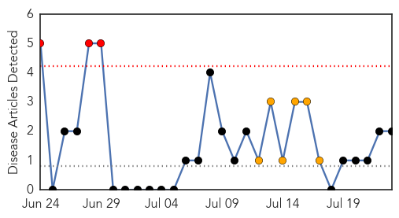
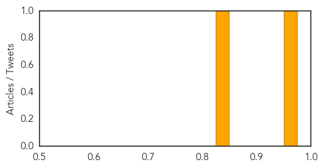
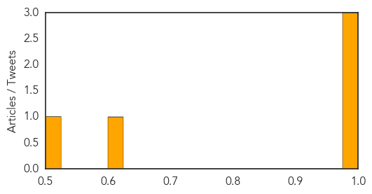

Pertussis
30-Day Web Trend
3 alerts, 6 warnings

30-Day Twitter Trend
0 alerts, 0 warnings

Article Locations
Article Confidences
Top Articles:
Top Tweets:
-
No tweets found for Jul 23, 2015
MERS
30-Day Web Trend
0 alerts, 0 warnings
30-Day Twitter Trend
0 alerts, 0 warnings

Article Locations

Article Confidences
Top Articles:
Top Tweets:
- 0.661
- AFD Blog `Saudi MOH: 2 More MERS Cases In Riyadh (1 Fatal)' MERS-CoV http://t.co/3FmFdW0dKx
- 0.646
- AFD Blog `Saudi MOH Announces 2 MERS Cases' MERS-CoV http://t.co/TR7YKdX6VD